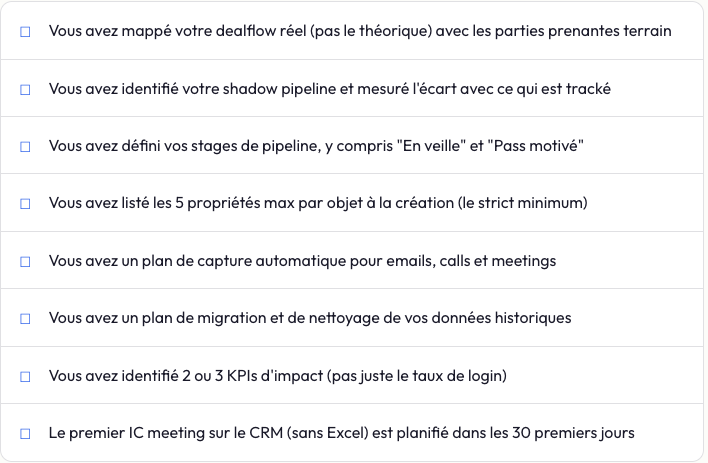

Pipeline, relations, automatisation. Tout ce que les fonds PE, VC et boutiques M&A doivent savoir pour structurer un CRM qui fait vraiment gagner des deals.
Il y a un paradoxe que l'on voit chez presque tous les fonds qu'on accompagne. Ce sont des gens brillants. Ils savent analyser un business model en dix minutes, négocier un pacte d'actionnaires les yeux fermés, repérer une tendance de marché avant tout le monde. Et pourtant, quand il s'agit de structurer leur dealflow dans un CRM, c'est le chaos.
On retrouve un fichier Excel avec 400 lignes, des colonnes de couleur, un onglet "À relancer" que personne n'a ouvert depuis février. Les teasers arrivent par mail, par WhatsApp, par message LinkedIn. Les partners mettent des gens en relation au téléphone et rien ne remonte nulle part. Et quand un analyste quitte l'équipe, une partie de l'information sur certains deals disparaît avec lui.
Ce n'est pas un problème de talent. C'est un problème de système.
Un CRM pour un fonds, ce n'est pas un logiciel de vente classique. C'est un système de mémoire institutionnelle. Et en 2026, ne pas en avoir un qui fonctionne, c'est comme jouer au poker en oubliant les cartes qu'on a en main car personne ne s'en rappelle.
Ce guide est né de ce que nous avons observé en accompagnant des fonds PE, des boutiques M&A et des VCs dans la mise en place de leur CRM chez Luphy. On ne va pas vous vendre un outil en particulier. Ce guide a pour but de vous montrer comment penser et architecturer votre CRM pour ne plus perdre d'informations sur votre dealflow, quel que soit le logiciel que vous choisirez.
Pourquoi un CRM "classique" ne marche pas pour un fonds
La première chose à comprendre, c'est que le CRM d'un fonds d'investissement n'a rien à voir avec le CRM d'une startup SaaS ou d'un e-commerce.
Un CRM commercial classique est fait pour des cycles de vente courts (quelques semaines), un pipeline linéaire (lead → démo → closing), et une logique de volume. Salesforce, HubSpot, Pipedrive dans leur configuration par défaut sont pensés pour ça.
Un fonds, c'est l'inverse. Les cycles durent des mois, parfois des années. Le pipeline n'est pas linéaire : on peut créer un deal, le mettre en veille, y revenir 18 mois plus tard quand le contexte a changé. Et surtout, la matière première n'est pas le "lead". C'est la relation.

Concrètement, voici ce qui change :
En M&A, un intermédiaire peut vous envoyer 15 dossiers sur 3 ans. La relation avec lui est plus importante que n'importe quel deal individuel. Si votre CRM n'est pas capable de tracker cette relation dans la durée, vous perdez l'essentiel.
En PE, un deal peut rester en veille pendant des mois, puis revenir sur la table quand les conditions changent. Si le CRM le considère comme "perdu" au bout de 30 jours d'inactivité (comme le ferait un CRM SaaS), vous passez à côté.
En VC, le réseau du fonds est son actif le plus précieux. Qui connaît qui, depuis quand, par quelle intro. Si cette intelligence relationnelle vit uniquement dans la tête de vos partners, elle disparaît le jour où ils partent.
Les 5 briques pour tracker votre Dealflow dans votre CRM
On a vu passer des dizaines de configurations CRM. Celles qui marchent ont toutes les mêmes fondations. Pas forcément le même outil, mais les mêmes briques. Voici les cinq principales que vous devez à tout prix avoir.
Un pipeline calé sur vos étapes réelles
Oubliez les stages par défaut de votre CRM. Votre pipeline doit refléter exactement la façon dont vous traitez un deal, du premier teaser au closing (ou au rejet). Chez la plupart des fonds que nous accompagnons, ça ressemble à ça :

Le point clé : n'ajoutez pas un stage "En veille" mais créez directement un pipeline "En veille". Dans ce pipeline, vous ne suivrez pas une logique linéaire mais une logique cyclique avec 2 à 5 stages. Quelques exemples de deals : Mauvais Timing, Pas d'intérêt, Maturité insuffisante. Chaque Deal stage peut ensuite avoir une séquence d'actions automatisée qui permet de conserver la relation avec le lead. Le secret : toujours avoir une next step planifiée qui s'appuie sur les derniers échanges ou informations récoltées. Et cela peu importe que la tâche soit automatisée ou à réaliser par un membre de l'équipe.
Sans ce pipeline, ils tombent dans l'oubli.
Toujours avoir un stage "Close Lost" dans votre Pipeline Dealflow avec un champ texte obligatoire. Ce champ doit servir à renseigner la raison pour laquelle vous avez perdu le deal. Pourquoi on a dit non ? C'est de l'or quand un deal similaire revient 18 mois plus tard. Vous savez exactement ce qui ne convenait pas la première fois.
Un mapping relationnel, pas un carnet d'adresses
Votre CRM doit répondre instantanément à trois questions : qui dans l'équipe connaît cette personne ? Depuis quand ? Et via quelle intro ?
Dans la pratique, ça veut dire que chaque contact est relié aux deals auxquels il a participé, aux personnes qu'il a présentées, et à l'historique complet des échanges (mails, calls, meetings). Pas juste un nom et un email.
La plupart des CRM modernes (Affinity, 4Degrees, HubSpot bien configuré) savent le faire. Mais ça ne marche que si la donnée est captée automatiquement. Cependant, comme tout système automatisé, cela nécessite une certaine vigilance dans un premier temps pour être sûr que les personnes et sociétés liées à un deal, le sont réellement. Même les meilleurs CRM ont des bugs.
Déléguer à l'owner d'un deal (la personne responsable du deal au sein du fonds) la charge de s'assurer que les informations sont bien loggées dans le CRM et si non, les compléter.
La capture automatique des interactions
C'est la brique la plus critique, et c'est celle qui manque le plus souvent.
Votre équipe passe une grande partie de leur temps au téléphone, sur WhatsApp, en visio. Ils mettent des gens en relation, reçoivent des teasers, échangent des NDA. Si le CRM demande 15 minutes de saisie manuelle pour chaque interaction, il est évident que votre équipe ne le fera pas. Et on ne peut pas leur en vouloir : l'heure d'un partner vaut trop cher pour être passée à remplir des formulaires.
La solution, c'est de brancher les flux là où ils existent déjà. Synchro automatique des emails (Outlook/Gmail), connexion WhatsApp via des outils comme Hubtype (nécessite WhatsApp Business) ou des intégrations natives, transcription automatique des calls avec mise à jour des propriétés dans le CRM.
L'objectif, c'est que 80% de la donnée entre dans le système sans qu'aucun humain ne touche un clavier.
Ce qu'on recommande :
- Téléphone → Allo : pour le log automatique des calls avec les notes
- Email → intégration native sur la plupart des CRM
- Meeting → Circleback : prise de notes, transcript intégral, gestion multilingue, enregistrement possible sur téléphone en réunion physique, création et assignation automatique des tâches dans le CRM
- Saisie de deal automatique → n8n + Claude : permet de créer des workflows customisés qui vont directement récupérer les informations publiques clefs sur une société et sur un profil LinkedIn
Des alertes et des tâches, pas des dashboards passifs
Un CRM qui ne fait que stocker de l'information est un CRM mort. Ce qui fait la différence, c'est sa capacité à déclencher des actions.
Par exemple : un teaser est reçu depuis 48h et personne n'a encore répondu ? Alerte. Un deal en due diligence n'a pas bougé depuis 3 semaines ? Tâche de relance automatique assignée à l'owner. Un intermédiaire clé n'a pas été contacté depuis 90 jours ? Rappel.
Ce sont ces petits mécanismes qui colmatent les fuites de votre pipeline. Ce n'est pas le dashboard mensuel que personne ne regarde qui sauve les deals. Ce sont les micro-rappels au bon moment.
De notre expérience, c'est là où l'adoption du CRM échoue. L'habitude d'avoir sa to-do list dans le CRM est souvent la plus longue et la plus difficile à prendre. Sans cette habitude, votre équipe et vous-mêmes perdrez l'habitude d'aller sur le CRM pour connaître les next steps et s'en suivra un long abandon après un coûteux investissement.
Un reporting qui sert le comité d'investissement
Le test ultime de votre CRM : est-ce qu'un partner peut l'ouvrir tel quel pour préparer leur IC meeting, ou est-ce qu'il demande encore un "fichier Excel récap" à un analyste ?
Si c'est le deuxième cas, votre CRM n'est pas la source de vérité. Et s'il n'est pas la source de vérité, personne n'a de raison de le maintenir à jour.
Un bon setup de reporting pour un fonds inclut : une vue pipeline par stage avec les montants, une vue relationnelle (top 20 intermédiaires par nombre de deals envoyés), et un suivi de la vélocité (temps moyen par stage). Trois vues, pas plus. La simplicité encourage l'usage.
.svg)
Quel CRM choisir ? Le paysage en 2026
C'est la question que tout le monde pose en premier, alors qu'elle devrait venir en dernier. L'outil compte moins que la façon dont vous le configurez. Mais puisqu'il faut bien choisir, voici comment le marché se découpe aujourd'hui.

Un HubSpot bien implémenté pour un fonds de 5 à 20 personnes fera mieux qu'un DealCloud installé en mode standard que personne n'utilise. Le facteur décisif, ce n'est pas la puissance de l'outil. C'est la qualité de la configuration et l'adoption par l'équipe.
Pour choisir, posez-vous trois questions simples. Combien de deals actifs avez-vous en simultané ? Combien de contacts et d'intermédiaires trackez-vous ? Et surtout, combien de personnes dans votre équipe doivent utiliser le système chaque semaine ? Un fonds avec 10 deals actifs et 3 000 contacts peut se permettre un outil léger. Au-delà de 40 deals actifs et 30 000 contacts, il faut du solide.
Le plan d'implémentation : de zéro à opérationnel
Voici comment on structure un projet CRM dealflow chez Luphy. Ce n'est pas un processus rigide, mais un cadre qu'on adapte à chaque fonds. Comptez entre 4 et 8 semaines pour une petite équipe, 8 à 16 pour une structure plus complexe.

Phase 1 : l'audit (1 semaine)
On passe une demi-journée avec les partners et analystes. L'objectif : réaliser une cartographie pour comprendre comment les deals circulent réellement, pas comment ils sont censés circuler. Où arrivent les teasers ? Qui décide quoi ? Où se perdent les infos ?
C'est aussi là qu'on identifie le "shadow pipeline", c'est-à-dire tous les deals qui vivent dans les boîtes mail et les WhatsApp mais n'apparaissent nulle part dans le système officiel. Chez la plupart des fonds, il représente 30 à 60% du flux réel.
Phase 2 : l'architecture CRM (2 semaines)
On construit le squelette du système. Les étapes du pipeline, les propriétés de chaque objet (contact, entreprise, deal), les automations, les vues et les dashboards. Tout est pensé pour coller aux process identifiés en phase 1.
Un point qui fait toute la différence : le nombre de champs obligatoires. Trop de champs = personne ne remplit rien. La règle qu'on applique : 5 champs max par objet à la création. Le reste se remplit par enrichissement automatique ou manuellement aux stages suivants.
Phase 3 : migration et connexions (2 semaines)
On rapatrie les données historiques (l'Excel existant, les contacts Outlook, les deals passés) et on branche les flux entrants (synchro email, calendrier, éventuellement WhatsApp). C'est la phase la plus technique et celle où la plupart des implémentations bâclées échouent. Une migration mal faite empoisonne le CRM dès le premier jour.
Phase 4 : go-live et adoption (2 semaines)
Le CRM est prêt, mais le travail n'est pas fini. L'enjeu maintenant, c'est l'adoption. On forme chaque profil sur son usage spécifique (le partner n'utilise pas le CRM comme l'analyste). On installe le CRM dans les routines existantes : le Monday morning meeting se fait directement depuis la vue pipeline. Le premier IC meeting sans Excel est un moment clé.
Les 4 erreurs qui tuent un projet CRM en fonds
On les voit revenir systématiquement. Si vous en évitez ne serait-ce que deux, vous êtes déjà devant 80% du marché.
1. Choisir l'outil avant de comprendre le process
"On veut DealCloud parce que tel fonds l'utilise." On entend ça souvent. Le problème, c'est qu'un outil spécialisé mal configuré est aussi inutile qu'un outil générique. Commencez par mapper vos process. L'outil vient après.
2. Compter sur la discipline des partners pour la saisie
Si votre stratégie d'adoption repose sur la phrase "il faut que les partners remplissent le CRM", vous avez déjà perdu. Ce n'est pas un problème de volonté, c'est un problème de design. Automatisez la capture, rendez la saisie invisible, et le CRM se remplit tout seul.
3. Migrer les données sans les nettoyer
Importer un Excel de 4 000 lignes avec des doublons, des fiches incomplètes et des données de 2019 dans un CRM neuf, c'est comme déménager en emportant le bazar du grenier. Prenez le temps de nettoyer, dédupliquer et enrichir avant de migrer. Sinon, l'équipe ouvrira le CRM le premier jour, verra du chaos, et ne reviendra pas.
Best practice : pour les contacts comme pour les sociétés, définissez un champ qui sert de clef de déduplication.
- Pour les contacts : l'email. Cela permet de fusionner automatiquement tout contact avec un email similaire.
- Pour les sociétés : le nom de domaine ou la page LinkedIn. Sans ce champ obligatoire côté sociétés, vous pouvez vous retrouver avec trois fiches pour la même société. Il vaut mieux utiliser le nom de domaine plutôt que l'adresse d'une société car l'adresse est sujette à des variations de typographies ou fautes de frappe.
Exemple : "38 Chemin des bleuets" ≠ "38 chemin des bleuet" pour votre CRM
4. Mesurer le login au lieu de mesurer l'impact
Votre CRM affiche 85% de taux de connexion ? Ça ne dit rien. Les bonnes métriques d'un CRM pour fonds, ce sont : le taux de deals entrés automatiquement (vs manuellement), le temps de réponse moyen aux intermédiaires, le pourcentage de deals avec un owner et une prochaine action datée, et le nombre de relations mappées par mois. Ce sont ces indicateurs qui vous disent si le CRM produit de la valeur ou s'il consomme du temps.
Demandez à un partner de trouver en moins de 30 secondes l'historique complet des échanges avec un intermédiaire donné. S'il n'y arrive pas, votre CRM ne fait pas son travail.
La checklist avant de lancer votre projet
Avant de signer avec un éditeur ou de lancer une implémentation, assurez-vous d'avoir validé ces points.

Vous voulez structurer le tracking de votre dealflow dans votre CRM ?
On accompagne des fonds PE, VC et boutiques M&A dans la mise en place de CRM adaptés à leurs process. Audit, architecture, migration, adoption. Le tout en 4 à 8 semaines.
Réserver un appel chez Luphy